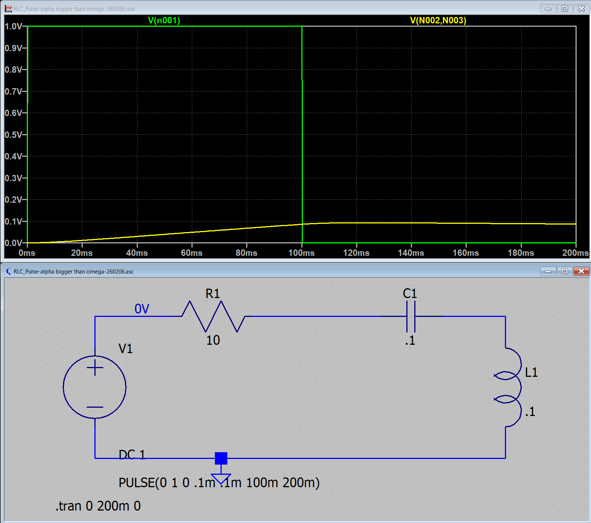
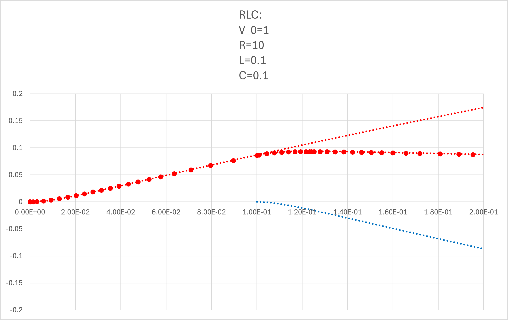

１６ー５．電圧で考えてみる（RLC回路）: α > ω0
コンデンサの電圧，です．
α > ω0
0< t < t0
\(\Large I_1(t) = \displaystyle \frac{V_0}{2\omega L} \cdot e^{- \alpha t} \cdot \left[ e^{ \omega t} -e^{-\omega t} \right] = \frac{V_0}{\omega L} \cdot e^{- \alpha t} \cdot sinh \ ( \omega t)\)
\(\Large \hspace{40pt} \displaystyle \left(sinh (x) = \frac{e^x - e^{-x}}{2}, \ cosh (x) = \frac{e^x + e^{-x}}{2}\right) \)
t0 < t
\(\Large I_2(t) = \displaystyle \frac{V_0}{\omega L} \left[ e^{- \alpha t} \cdot sinh \ ( \omega t) - e^{- \alpha (t-t_0)} \cdot sinh \ \omega (t-t_0)\right]\)
\(\Large \hspace{40pt} \displaystyle \left(sinh (x) = \frac{e^x - e^{-x}}{2}, \ cosh (x) = \frac{e^x + e^{-x}}{2}\right) \)
VC ： コンデンサの電圧
0 < t < t0
\(\Large \displaystyle I_1(t) = \frac{V_0}{2\omega L} \cdot e^{- \alpha t} \cdot \left[ e^{ \omega t} -e^{-\omega t} \right] \)
\(\Large \displaystyle = \frac{V_0}{2\omega L} \cdot \left[ e^{ (- \alpha +\omega) t} -e^{(- \alpha-\omega) t} \right] \)
\(\Large \displaystyle V_{C1} = \frac{1}{C} \int I(t) \ dt \)
\(\Large \displaystyle = \frac{V_0}{ 2\omega LC} \left\{ \frac{1}{ -\alpha +\omega} \ e^{ (- \alpha +\omega) t} - \frac{1}{- \alpha-\omega} e^{(- \alpha-\omega) t} \right\} + D \)
\(\Large \displaystyle = \frac{V_0}{ 2\omega LC} \left\{ \frac{\omega + \alpha }{ \omega^2 -\alpha^2} \ e^{ (- \alpha +\omega) t} + \frac{\omega - \alpha}{ \omega^2 -\alpha^2} e^{(- \alpha-\omega) t} \right\} + D \)
ここで，
\(\Large \displaystyle \omega^2 = \alpha^2 - \omega_0^2 \)
なので，
\(\Large \displaystyle = -\frac{V_0}{ 2\omega LC} \left\{ \frac{\omega + \alpha }{ \omega_0^2 } \ e^{ (- \alpha +\omega) t} + \frac{\omega - \alpha}{ \omega_0^2} e^{(- \alpha-\omega) t} \right\} + D \)
また，
\(\Large \displaystyle \omega_0^2 = \frac{1}{ LC} \)
なので，
\(\Large \displaystyle = -\frac{V_0}{ 2\omega } \left\{ (\omega + \alpha) \ e^{ (- \alpha +\omega) t} + (\omega - \alpha) \ e^{(- \alpha-\omega) t} \right\} + D \)
初期条件は，
\(\Large \displaystyle t =0 ; \ V_C(0) =0 \)
なので，
\(\Large \displaystyle V_C(0) =0 = -\frac{V_0}{ 2\omega } \left\{ (\omega + \alpha) + (\omega - \alpha) \right\} + D \)
\(\Large \displaystyle = -\frac{V_0}{ 2\omega } \left\{ 2 \omega \right\} + D \)
\(\Large \displaystyle D = V_0 \)
となります，したがって，
\(\Large \displaystyle V_{C1} = V_0 \left[1 - e^{- \alpha t} \cdot\left\{ \frac{\omega + \alpha}{2 \omega} \ e^{ (- \alpha +\omega) t} + \frac{\omega - \alpha}{2 \omega} \ e^{(- \alpha-\omega) t} \right\} \right] \)
\(\Large \displaystyle = V_0 \cdot\left[1 - e^{- \alpha t} \cdot \left\{ \frac{e^{ \omega t} + e^{ -\omega t}}{2 } + \frac{\alpha}{\omega} \frac{e^{ \omega t} - e^{ -\omega t}}{2 } \right\} \right] \)
\(\Large \displaystyle = V_0 \cdot\left[1 - e^{- \alpha t} \cdot \left\{ cosh \ ( \omega t) + \frac{\alpha}{\omega} \ sinh \ ( \omega t) \right\} \right] \)
となります．
t0 < t
\(\Large \displaystyle I_2(t) = \frac{V_0}{2\omega L} \cdot \left[ \left\{ e^{ (- \alpha +\omega) t} -e^{(- \alpha-\omega) t} \right\} - \left\{ e^{ (- \alpha +\omega) (t - t_0)} -e^{(- \alpha-\omega) (t-t_0) } \right\}\right] \)
\(\Large V_C = \displaystyle \frac{1}{C} \int I_2(t) \ dt \)
この積分において，第一項は，0<t<t0と同じ計算になります．．
第二項は，T=t-t0，と置けば同じ積分となるので，
\(\Large \displaystyle V_{C2}= V_0 \cdot\left[1 - e^{- \alpha t} \cdot \left\{ cosh \ ( \omega t) + \frac{\alpha}{\omega} \ sinh \ ( \omega t) \right\} \right] - V_0 \cdot\left[1 - e^{- \alpha (t-t_0)} \cdot \left\{ cosh \ ( \omega (t-t_0)) + \frac{\alpha}{\omega} \ sinh \ ( \omega (t-t_0)) \right\} \right] + D\)
となります．初期条件は，
\(\Large t = t_0 : \)
先に述べたように，右辺第一項は，VC(t0)となるので，右辺第二項，三項，のみを考えればいいので，
\(\Large \displaystyle V_{C2}(t_0) = 0 = - V_0 \cdot\left[1 - e^{- \alpha \cdot 0} \cdot \left\{ cosh \ ( \omega \cdot 0) + \frac{\alpha}{\omega} \ sinh \ ( \omega \cdot 0) \right\} \right] + D\)
ここで，
\(\Large \displaystyle sinh (0) = \frac{e^0 - e^{-0}}{2} = 0, \ cosh (x) = \frac{e^0 + e^{-0}}{2} = 1 \)
\(\Large \displaystyle V_{C2}(t_0) = 0 = - V_0 \cdot\left[1 - 1 \right] + D\)
\(\Large \displaystyle D = 0 \)
となります．したがって，
\(\Large \displaystyle V_{C2}= V_0 \cdot\left[1 - e^{- \alpha t} \cdot \left\{ cosh \ ( \omega t) + \frac{\alpha}{\omega} \ sinh \ ( \omega t) \right\} \right] - V_0 \cdot\left[1 - e^{- \alpha (t-t_0)} \cdot \left\{ cosh \ ( \omega (t-t_0)) + \frac{\alpha}{\omega} \ sinh \ ( \omega (t-t_0)) \right\} \right] \)
となり，ステップオフの場合は，
第一項 ： 最初のステップオンの際の波形（たとえば，0→1）
第二項 ： t=t0，において，1→0，のように，逆のステップを入力した波形
なので，ステップオフ後，の波形は，
ステップオンの波形の残り ＋ マイナスのステップの波形 の和
となるわけです．
実際に，LTspice，でシミュレートしてみましょう．ここ，と同様に，
V0 : 1 V
R : 10 Ω
L : 0.1 H
C : 0.1 F
とすると，
\(\Large \displaystyle \omega_0 = \frac{1}{\sqrt{0.1 \times 0.1} } = 10 \ (1/s) \)
\(\Large \displaystyle \alpha \equiv \frac{10}{2 \times 0.1} = 50 \ (1/s) \)
となり，α > ω0，の条件となります．
\(\Large \displaystyle \omega = \sqrt{ \alpha^2 - \omega_0^2 } = 48.99 (rad/s) = 7.80 Hz \)
となり，LTspiceでシミュレートすると，

となります．式と当てはめてみると，

と一致することがわかります（全領域で）．
青点線，が右辺第二項，で右辺第一項との和が，シミュレーションと一致することがわかります．
次ページは，α = ω0の場合を考えてみましょう．